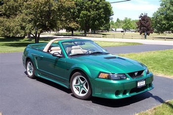

Generation 4
|  |
The fourth generation began in 1994 and ended in 2004. This generation marked the 30th anniversary of the Original Mustang. To commemeroate the anniversary, Ford introduced a new lineup of models that resembled the first gerneration. In 2015, the Mustang faced a complete redesign that was based on the Fox platform.
The base model featured a 3.8-liter V6 engine, 5-Speed manual transmission, and a option of a 4-speed automatic trasmission. After thiry years, Ford retired the small-block V8 engines. In 1999, new upgrades and changes were introduced into the Ford's New Edge styling theme with larger wheel arches, creases in bodywork, and sharper contours.
First time a notchback coupe model was not avalible
This generation was sold in Australia between 2001 and 2002
Mustang's where modified to allow for right-hand-dirve